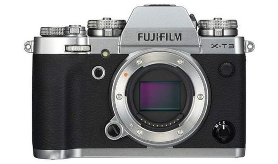

Mirrorless Cameras
Mirrorless cameras offer a compact and lightweight alternative to DSLRs, featuring interchangeable lenses and advanced features. They omit the mirror mechanism, allowing for a slimmer body design.
Features of Mirrorless Cameras
Some key features of mirrorless cameras include:
- Interchangeable lenses for various photography needs
- Compact and lightweight design
- Electronic viewfinders (EVF) with real-time preview
- High-speed continuous shooting
- Advanced autofocus systems
Popular Mirrorless Brands and Models
Some popular brands and models in the mirrorless market include:
- Sony Alpha series (e.g., Sony Alpha a7 III, Sony Alpha a6400)
- Fujifilm X series (e.g., Fujifilm X-T4, Fujifilm X-Pro3)
- Canon EOS R series (e.g., Canon EOS R5, Canon EOS RP)
Mirrorless cameras are favored for their portability, innovative features, and versatility.